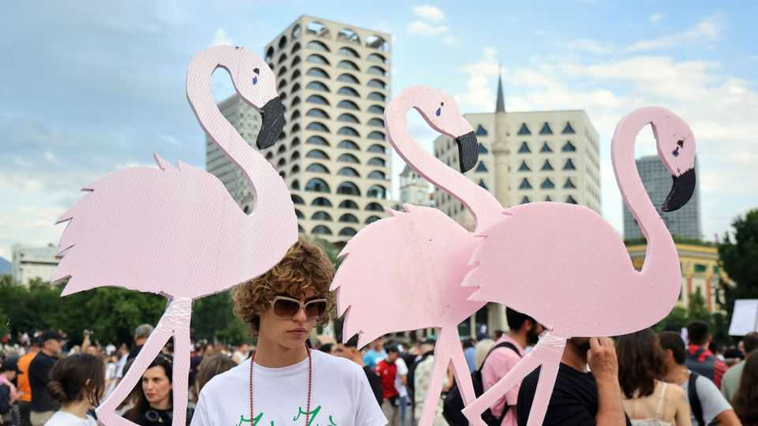

Albania’s flamingo protests target Donald Trump’s son-in-law
Jared Kushner’s beach development brings trouble for a prime minister
June 18th 2026

JUST LAST year, Edi Rama was comfortably re-elected to a fourth term as Albania’s prime minister. Yet in recent days the usually sunny ex-basketball star has seemed increasingly nervous. Every day since May 31st, thousands of protesters have appeared on the streets to oppose plans for luxury beach developments involving Jared Kushner, Donald Trump’s son-in-law. Because the projects threaten to damage a delicate lagoon, the demonstrations have been dubbed the “flamingo revolution”. The protesters say that the threats to the environment, and the risk of corruption, are so serious that Mr Rama should quit.
The Albanian press began reporting in 2024 on plans by Mr Kushner and Ivanka Trump, his wife, to develop two swanky resorts on Albania’s southern coast. One is on the Narta lagoon, a protected conservation area located where the Vjosa river flows into the Adriatic. The other is on Sazan, a nearby island and former military base. The lagoon is home to flamingos, pelicans and mosquitoes. Sazan has no fresh water and is littered with unexploded ordinance, as is the sea surrounding it.
At the end of May workers began fencing off a beach at the lagoon, and on May 30th a group of protesters and security guards clashed at the site. That touched off bigger protests in Tirana, the capital. Albanian media have been investigating who owns the Narta land under development and how they obtained it. Apart from Mr Kushner, two Syrian brothers living in Qatar have been linked to the project. The Albanian investors include a powerful oligarch. On June 12th Albania’s independent anti-corruption agency issued an arrest warrant for an Albanian living in Miami, which included allegations of fraud relating to title deeds in the lagoon area.
Olsi Nika, head of EcoAlbania, an environmental organisation, says the violence at the lagoon was the spark that set off an explosion of accumulated grievances. He notes a general lack of “transparency and accountability in government”: in 2024, the law on protected areas was quietly changed to allow luxury resorts to be built inside them. The protests are diffuse, says Diell Grazhdani, a marketing executive: “People are talking about everything from LGBT rights to pelican rights.” But they all demand the arrest of Mr Rama—and of Sali Berisha, the main opposition leader.
Some call the protests a Gen Z revolt. Mr Berisha first became president of Albania in 1992. He and Mr Rama have dominated politics for so long that no one under 40 can recall a time without them. “They see all of us as old-fashioned and an establishment which has to go,” says a friend of Mr Rama.
Mr Rama faces no serious challenge from inside his Socialist Party. “He only has servants but no collaborators,” says Gjergj Erebara, a journalist. As for Mr Berisha, the country’s anti-corruption agency is trying him on charges of corruption. (In 2021 America imposed sanctions on Mr Berisha, but on June 11th the State Department lifted them, citing “compelling national interest”.) Other politicians charged with corruption include the mayor of Tirana and Mr Rama’s former deputy prime minister. All deny the charges.
The protesters range from liberal anti-corruption activists and environmentalists to nationalists calling for a Greater Albania including Kosovo. They have united against their country’s political elite. What they will achieve is less clear. Some see similarities to protests that have rocked Serbia in recent years. Those were touched off by concern over environmental damage from a proposed lithium mine, and later turned against another plan linked to Mr Kushner (since abandoned) to transform a designated historical monument in Belgrade into a luxury hotel.
As in Serbia, Albania’s new protest movement is dominated by the young. They are venting their anger against an elite that flaunts its wealth. The Narta lagoon’s flamingos have given them a blazing pink symbol of dissatisfaction. But demonstrations without strong leaders and concrete plans may end up achieving little. ■
To stay on top of the biggest European stories, sign up to Café Europa, our weekly subscriber-only newsletter.